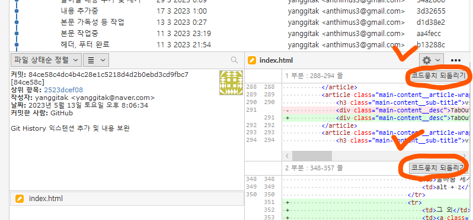

관련 서적 및 레퍼런스
Web 언어에 대한 거의 모든 정보 모음.
구글 검색창에 "mdn charset"과 같이 검색하면 상세한 정보를 얻을 수 있고 해당 페이지 하단에 크로스 브라우징 정보까지 얻을 수 있어 좋음.
Web 언어에 대한 다양한 영상
Web 언어에 대한 안내서(국내 저자)
자바스크립트 안내서(해외 저자)
Yotube 영상으로 Javascript 8시간에 배우기
Yotube 영상으로 Typescript를 활용한 Three.js 배우기
jQuery 공식 문서.
요즘 javascript로 현대 브라우저 대부분이 지원하고 성능까지 좋아서 굳이 쓸 필요는 없지만, 아직까지 굉장히 많은 사이트에서 jquery를 활용하고 있음.
심플한 예제와 해설로 웹 관련 언어들을 쉽게 배울 수 있는곳
자바스크립트 깔끔하게 작성하기
자료구조와 알고리즘을 자바스크립트로 구현하여 모은 곳
일반적으로 쓰이는 알고리즘을 자바스크립트로 구현하여 모은 곳
웹 접근성에 대해 자세히 알 수 있는 곳
기능을 구현 할때 ARIA role을 활용하여 접근성에 맞게 구현한 예제 모음
Git 사용 방법을 쉽게 설명함.
공식 문서(
https://git-scm.com/book/ko/v2)도 있지만 너무 많은것이 있어 오히려 처음 배우기엔 무리.
차라리 기초 개념만 익히고 소스트리 등을 활용하는것을 강력 추천.
웹 관련 다양한 주제를 무료로 쉽게 배울 수 있는 곳
CSS를 편하게 쓸 수 있게해주는 도구인 SCSS(≒Sass) 공식 문서
CSS의 BEM 방법론에 대한 best practice
SVG path에 대한 완벽한 이해를 돕는 곳
CSS grid를 쉽게 이해할 수 있는 곳
CSS flex를 쉽게 이해할 수 있는 곳
굉장히 쉽게 네트워크를 이해 할 수 있는 곳
컴포넌트 UI 모음
굉장히 다양함.
무엇을 구현하려고 할 때 구글 검색창에 "codepen scroll animation" 등과 같이 1순위로 검색하여 작업할 때 영감을 얻으기 좋은 곳.
꽤 다양함.
영어로 되어있지만 DeepL과 함께라면 두렵지 않음.
자바스크립트 다양한 개념을 활용하여 알찬 예제를 구현
프론트엔드에게 익숙한 lodash, underscore 없이 순수 js만으로 구현한 예제 모음
제이쿼리를 활용한 UI - 01
개인적으로 제이쿼리는 이제 보내야할 때인듯...? 4.0이 나올 예정이지만...
플러그인(라이브러리)
웹 애니메이션 구현 최강자.
필자는 3년 간 한땀 한땀 scroll event의 구역 별 ratio 계산, Intersection Observer API 활용하여 scroll에 따른 애니메이션을 구현했었으나, 이것을 통해 구현하고 부터는 차원이 달라짐. 특히, scroll에 따른 animation 구현할 때 무조건 필수 플러그인이라 생각됨. 업무 효율이 최소 10배 이상 차이나고 추후 유지보수까지 고려한다면 그 이상의 신세계를 보장함.
텍스트 에디터
인지도 높고 좀 핫한 듯함. 사용하지 않았지만 심플하고 깔끔해 보임.
html의 특정 요소를 이미지로 저장하는 것.
niklasvh / html2canvas는 비추천함. 2024년 3월 5일 시점에서 2년 동안 이슈 관리나 업데이트가 없었고 복잡한 레이아웃(영상, 이미지, fixed 혼합 등)에서 특정 요소가 깨저보임.
가장 널리 사용되고 인기있는 슬라이드
smooth scroll(부드러운 스크롤).
몇 가지 제약사항이 있는 상태(2024년 3월 5일 기준으로 1년 전 이슈사항도 해결 안 된 것 같은데...) 이지만,
pc 크롬 브라우저의 딱딱 끊기는 스크롤 이동에서 scroll 모션이 있는 사이트에 함께 적용하면 효과가 극대화 됨.
필자는 개인적으로 smooth scroll을 비추천함. 스크롤에 따른 모션과 궁합이 좋긴하나, 사이드 이펙트(모달/콤보박스/iframe 안에 스크롤 영역 적용 문제, 강제 스크롤바 이동 후 모션 작동시 등)가 발생할 가능성이 있고 우회하려면 코드가 복잡해지거나 유지보수가 힘들어질 가능성이 있음. 역시, 순정 상태가 가장 깔끔함. 특정 요소에 대해서는 GSAP을 통해 쉽고 유지보수 좋고 부드럽게 컨트롤 가능하기도 하고...
정규식을 쉽게 사용하는 방법. ChatGPT 등 여러곳을 활용할 수 있지만 정확하지 않을 수 있어 이곳에서 직접 구현하는 것도 좋을 수 있음.
무료로 쉽게 웹 폰트 사용할 수 있는 곳
구글폰트가 아닌 직접 폰트를 서버에 올려서 쉽게 적용할 수 있게 도와주는 사이트
웹폰트 용량 축소 프로그램. 특히, 한글폰트는 용량이 많은 경우 반드시 서브셋폰트 만드는 것을 추천함.
사용법 바로가기 한글 서브셋 다운로드 : KS X 1001 + 숫자 + 영문 + 특수문자 + 한글 자모
웹폰트가 FOUT 방식(font-display:swap 등을 사용한 경우)일 때, 웹 폰트가 다운로드 되기 전 보여지는 폰트를 다운로드 후 폰트와 비슷하게 조정할 수 있는 웹앱
반응형 이미지 맵으로 어떤 해상도에서도 이미지맵 적용되게함. jQuery-rwdImageMaps는 ios 특정 상황에서 NaN 이슈가 있어 관련 보완 코드를 넣어야해서 비추천
다양한 기능으로 일관되게 비디오 재생할 수 있는 UI 제공
scroll 모션 등 세계적으로 많이 사용하는 모션 라이브러리. 구현한 페이지를 접속하는데 사용자에게 돈을 요구하지 않으면 기본 플러그인(scroll triger 등)은 해당 라이센스 하에 무료로 알고 있음.
갤러리 게시판 형태
정식 한글 지원하지 않지만(한글 적용하는 꼼수가 있음) 강력한 댓글 라이브러리. livere 보단 무료화 성향이 있음.
스크롤바 커스텀
에프터 이팩트와 SVG를 활용한 멋진 모션그래픽 제작. 단, 관련 js가 랜더링 되고 나서야 나오기 때문에 간단한 것은 간단한 것은 css로 구현하는 것이 좋음.
여러 박스 컨텐츠들을 반응형에 맞게 알아서 정렬해주고, 필터링, 드래그 엔 드랍 등 다양한 레이아웃을 제공
GNU GPL 라이선스 v3 허용하는 한(소스코드 공개 등) 막강한 풀페이지 레이아웃을 제공함. 한 화면에 들어갈 콘텐츠가 많으면 fullpage 레이아웃은 비추천.
간편하게 넣을 수 있는 지도 API. 다음 지도 > 위치 검색 > 왼쪽 상세보기 클릭 > 오른쪽 상단 깃발 표시 누를면 간단하게 추가 가능함.
.stl 파일을 활용하여 3D 물체를 조작할 수 있음.
사이트 open_in_new의 원본 소스를 활용하여 정상적으로 작동되는 소스 직접 올림. 스크립트 오류로 직접 다운받아서 로컬환경에서 확인 해야함.
새로운 버전open_in_newsvg 만으로 움직이는 애니메이션 구현(안에 이미지까지 넣을 수 있음)
개발 Tip
AI coding 보조 도구 01
가장 성능 좋음. 3.5 버전 부터는 역대 최강. SK 지원으로 한글어 능력이 뛰어난 장점도 있음. 다만, GPT처럼 초기 프롬프트 설정이 없는것이 아쉽... 2024년 6월 26일 기준으로 ChatGPT와 함께 양대산맥임.
복잡한 스크립트 쉽게 이해하기
때떄로, 얼기설기 꼬여있는 복잡한 코드를 본다면 이 순서도 도구를 활용하면 많은 도움이 될것이다.
정규식 확인
LLM으로 얻은 정규식을 검증하는 곳
대세인 텍스트 에디터. 참고로, 복잡한 테이블 작업과 이미지맵 작업할때는 Adobe Dreamweaver(유료)이 효율이 좋음.
vscode 추천 extension
Phind.com, Git graph, Git History, TabOut, Live Server, Project Manager, Auto Rename Tag, CSS Navigation, ESLint, Nested Comments, css-format-one-line, Bookmarks
vscode 사용 팁
- class 더블 클릭시 - 기호 때문에 class 전체가 선택 안되는 번거로움이 있으므로, ctrl + , > editor.wordSeparators 에서 - 기호는 빼면 편함.
- 우측 상단에 '...' 기호 클릭 > [편집기 열어 두기] 체크하면 파일 열때 새창으로 열림.
- 나만의 Snippet 만들기 : ctrl + shift + p > Snippets: Configure User Snippets > javascript.json 들어간 후 아래와 같이 코드 입력하면 javascript 파일 내에서 'cl' 입력 후 tab 누르면 쉽게 콘솔 로그 작업 가능함.
"Print to console": {
"prefix": "cl",
"body": [
"console.log('$1 : ' + $1 + '$2 : ' + $2);",
],
"description": "Log output to console"
}
-
자주쓰는 단축키
자주쓰는 vscode 단축키
| 설명 |
단축키 |
| vscode에서 계산하기 |
ctrl + shift + p > evaluate math expression 입력 |
| 선택한 코드와 동일한 것을 인접한 순서대로 선택하기 |
(ctrl + d) + d + d ... |
| 선택한 코드를 모두 선택 |
ctrl + shift + l |
| 해당 파일 전체 코드 정리 |
alt + shift + f |
| 선택된 부분만 코드 정리 |
ctl + k + f |
| 특정 폴더에서 찾기 |
탐색기에서 폴더 선택 > alt + shift + f |
| 좌우 스크롤 이동 |
shift + 마우스 휠 |
| 줄바꿈 제거 |
alt + z |
| 그 외 |
전체 단축키 모음 |
- 설정에서 detect indentation 체크하면 원하는 부분에 범위 지정 후 (ctrl + k) + f로 코드 포맷시 해당 파일의 들여쓰기에 맡게 알아서 포맷되어 편리함.
source tree 사용 팁
- 해당 툴은 방대한 git 명령어에 의존하지 않고 실무에서 필요한 모든 git 기능을 아주 쉽게 사용할 수 있음. 검색 기능 또한 막강하여 꼭 사용하기를 추천함.
- 원하는 범위에 있는 커밋의 수정된 파일만 추출 방법 :
해당 브랜치로 체크아웃 > 소스트리 우측 상단에 '터미널' 아이콘 클릭 > 추출하고 싶은 부분에 커밋에 태그 추가 > 아래 깃 명령어 입력
예시 : 아래 이미지와 같이 11과 22 태그를 추가하면 11 초과 22 이하의 커밋한 폴더 경로와 파일만 추출 후 압축 파일 생성됨.

git archive -o archive.zip HEAD $(git diff --name-only 11..22)
- 해당 도구는 한줄에서 특정의 부분 수정사항을 hightlight해 주지 않고 변경 사항을 검색할 수도 없어서 아래와 같이 꼭 연동하는 것이 좋음.
사이트에서 따라하여 설정 후 원하는 파일 선택 > ctrl + d
-
아래 표시한 버튼을 잘 활용하면 커밋하기전/원격에 커밋한 코드에서 파일의 특정 부분만 커밋(Shift + 클릭 활용)할 수 있으며 특정 부분만 되돌릴 수 있음. 해당 버튼을 상황에 따라서 유동적으로 바뀌므로 잘 활용하면 편하고 좋음.

chrome 추천 확장 프로그램
DeepL(현재까지 클로바X/Cluade LLM이 더 품질이 좋지만, 그래도 단축키 설정으로 바로 번역 가능해서 편함.), AdBlock(간혹 이것 때문에 콘텐츠가 안보여서 개발시 주의), axe DevTools - Web Accessibility Testing(웹접근성 체크)
회원 가입시 free 버전 이용할 수 있고 상당히 직관적이고 파일 뿐 아니라 폴더 전체 비교 가능함. github에 폴더채로 올리고 커밋 후 비교할 폴더를 통째로 넣어서 vscode/source tree로 비교할 수 있지만 많이 번거롭긴 함...
웹 프론트엔드 관련 유용한 정보를 뉴스레터 형식으로 주1회 받을 수 있음.
영어독해 실력 높이는 무료 강좌
영어 독해 실력이 곧 코딩 실력과 직결됨. 무료 강좌인 EBS 중학 뉴런 영어1,2,3 시리즈 추천함. Bing 채팅, ChatGPT 등 대규모 언어 모델이 발전하여 없던 시절에 비해서 크게 영어독해 공부의 중요성이 낮아졌음.
바로바로 코딩을 테스트할 수 있는 도구
엑셀에 html로 변환해주는 기능이 있지만, 엑셀 내용 여기 게시판에 붙여넣으면 테이블 코드가 자동 생성됨.
모바일 기기의 해상도, viewport 등 알 수 있는 곳
거의 모든 답을 찾을 수 있음. 번역기로 영어로 변환 후 구글링 하자. 한글 보다 더 유용한 검색 결과를 얻을 수 있고 AI Search Engine 보다 효과적인 답변을 찾을 수도 있음.
크로스 브라우징 문제를 파악 및 대처할 수 있는 곳
이메일 작업시 사용가능한 속성 확인하는 곳
IOS 사파리 관련하여 태그/속성 지원 여부 확인 하는 곳(2018년 이전 버전임)
웹 페이지의 품질을 개선하기 위한 오픈 소스 자동화 도구
세계적으로 CSS에 대한 동향을 확인 할 수 있는 곳
세계적으로 Javascript에 대한 동향을 확인 할 수 있는 곳
세계 브라우저 점유율 특히 한국 현재의 브라우저 점유율 및 버전 사용량을 확인할 수 있음
업무/생활 계획 짜기
업무/생활 메모장으로 활용. 따로 저장하지 않아도 되며, 자동으로 버전 관리를 해주므로 지난 작업 내역을 확인할 수 있어 keep 보다 훨씬 좋음.
한 줄로 만들어 버리는 툴
SVG를 background-image로 변환해주는 곳
현재 뷰포트 체크
디자인
css로 기상천외한 모양 구현할 수 있음.
mask 등을 활용한 정말 다양한 도형과 모양을 구현할 수 있는 예제 모음
코딩 가이드 제작 등 포토샵을 대체할 정도로 상당히 유용함. 포토샵 처럼 무겁지 않고 최근 웹퍼블리셔 친화적으로 바뀌어 상당한 대세가 되었음.
한가지 컬러 정하면 알아서 조화로운 컬러 생성
인기있는 색 조합 모음
쉽게 웹에 icon을 넣을 수 있는 곳 01
쉽게 웹에 icon을 넣을 수 있는 곳 02
쉽게 웹에 icon을 넣을 수 있는 곳 03
패턴 생성
다양한 html 심볼/특수문자 모음
다양한 이모지 아이콘 모음
Neumorphism 생성기
그라디언트 생성기
파피콘 쉽게 만들 수 있는 곳
상업적으로 이용 가능한 무료 이미지 모음
해외 감각적인 웹사이트 벤치마킹 할 수 있는 곳
국내 감각적인 웹사이트 벤치마킹 할 수 있는 곳